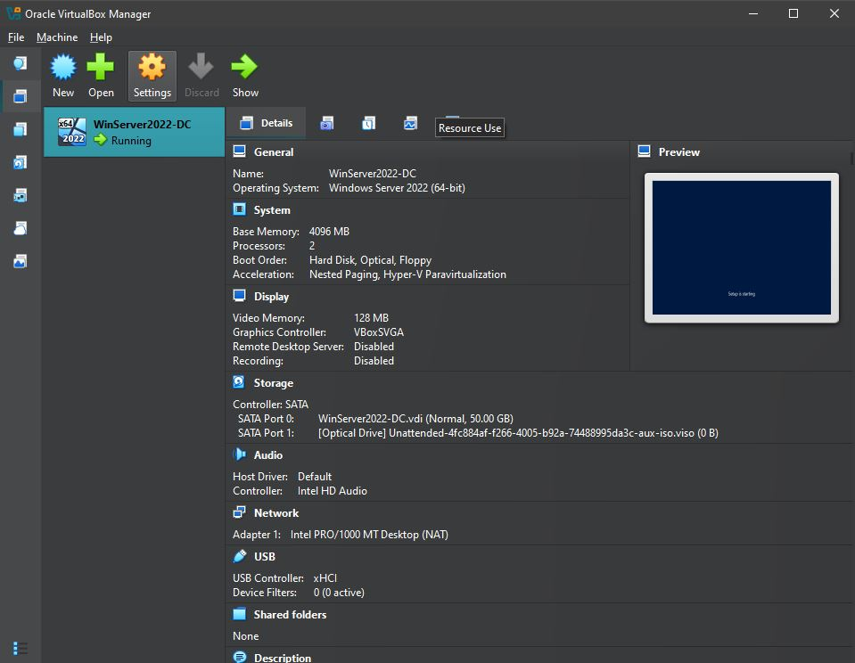
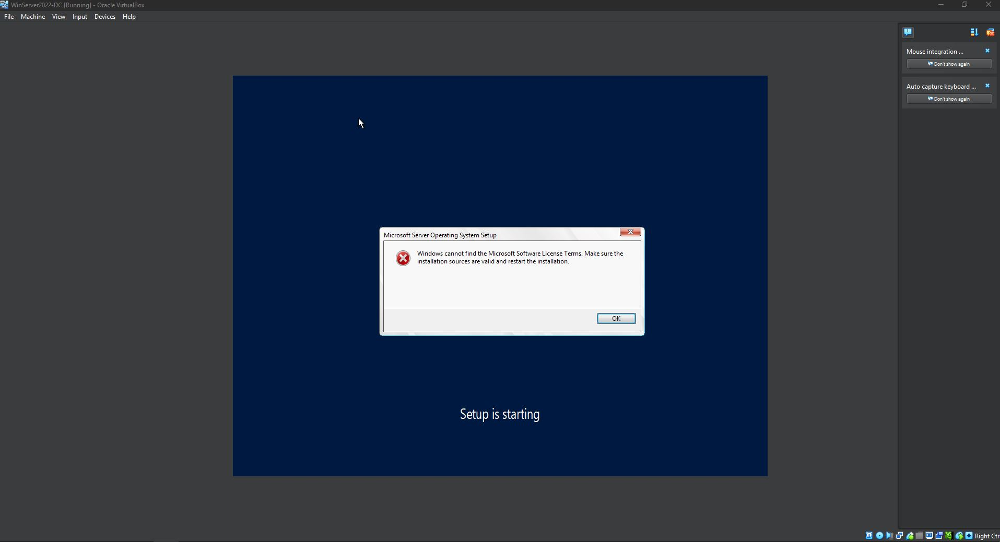
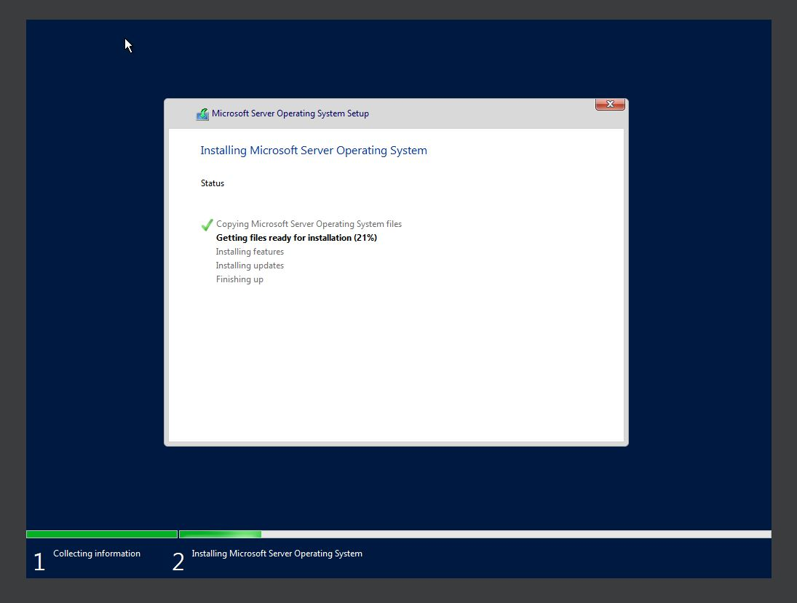
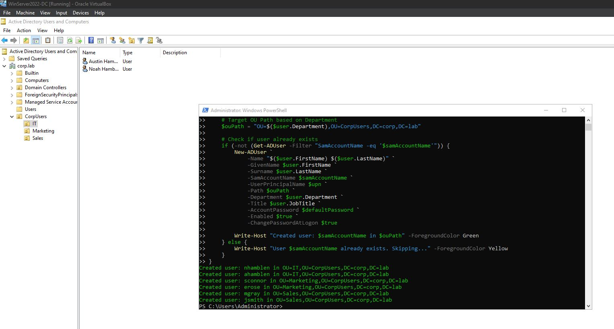
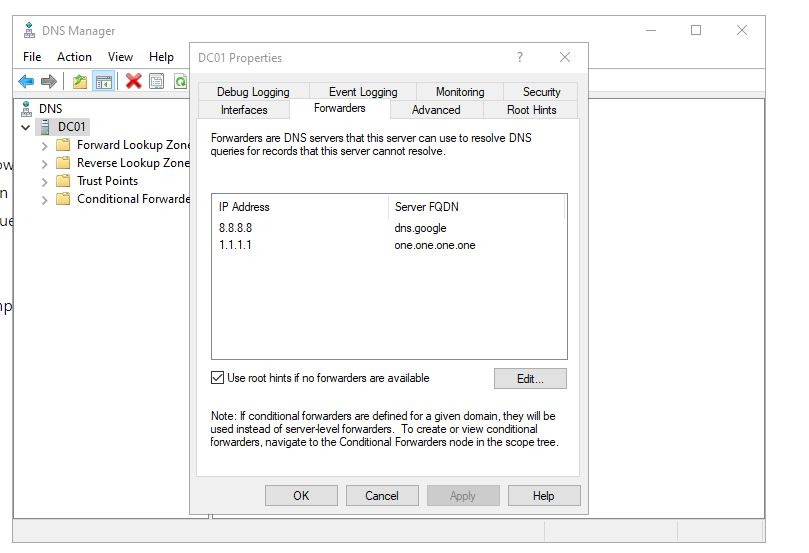
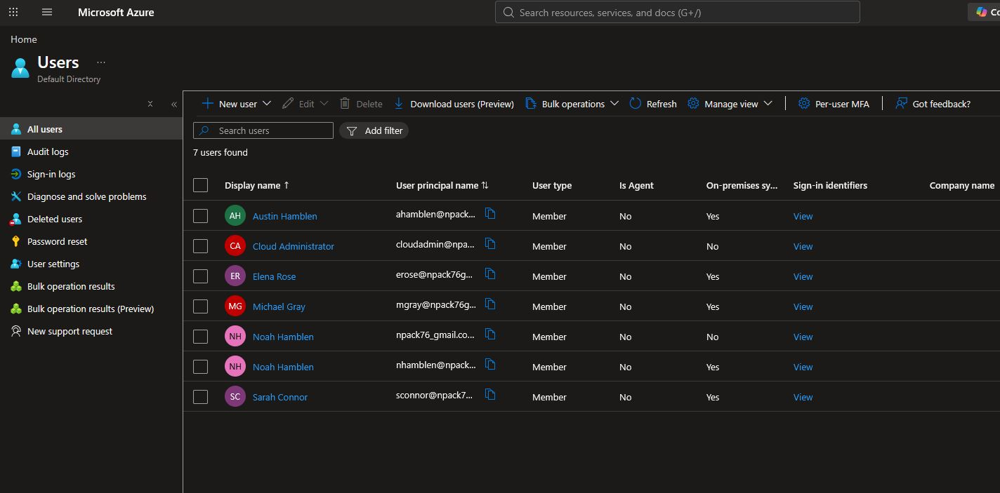

Infrastructure & Implementation Screenshots
Scroll through VM configurations, PowerShell AD setup, troubleshooting, and cloud synchronization screenshots.

1. Domain Controller VM Allocation
Provisioned VirtualBox VM environment (4GB RAM, 2 vCPUs, 50GB VDI) with NAT networking for outbound cloud sync.

2. Media & ISO Boot Troubleshooting
Resolved ISO image mounting errors and unattended installation license failures during setup.

3. Windows Server 2022 Deployment
Successfully installed base Windows Server 2022 operating system to build the domain controller.

4. Automated User & OU Provisioning
Executed PowerShell script, parsing userdata.csv to populate departmental OUs (IT, Marketing, Sales) in AD.

5. DNS & Outbound Network Routing
Configured public DNS forwarders (8.8.8.8, 1.1.1.1) to ensure reliable external name resolution for cloud sync.

6. Entra ID Hybrid Synchronization
Verified real-time attribute sync from local AD to Microsoft Entra ID (showing On-premises sync = Yes).